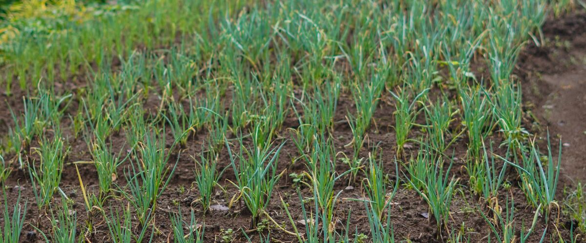

When to plant onions in Spokane, WA
Plant onion sets in Spokane Apr 1 – May 6.
- Difficulty
- Moderate
- Sun
- Full sun
- Spacing
- 4 inches apart
- Planting depth
- Sets 1 inch deep, tip just showing
- Frost
- Handles light frost
- First harvest
- About 110 days after planting
Why these dates
Spokane's typical last spring frost is April 26. As a cool-season crop that handles light frost, this crop doesn't need to wait for that date. In the Inland Northwest, though, the soil usually isn't ready to work until about April 1.
Inland Northwest. Higher, colder interior valleys. Cold springs and an earlier fall mean a shorter season; quick-maturing varieties pay off.
How to grow onions in Spokane
- Prepare the bed: loosen the soil and mix in an inch or two of compost.
- Plant onion sets Apr 1 – May 6, 4 inches apart, sets 1 inch deep, tip just showing.
- Water regularly and keep the bed weeded; onions don't compete well.
- Harvest: When the tops flop over in late summer, pull the onions and let them dry in a shady, airy spot for two weeks.
Key numbers
- Long-dayType for here
- 14–16 hour daysBulbing starts at
- Smaller than ¾ inchSets
- 6.0–7.0Soil pH
- Half the tops fallHarvest when
- 2–3 weeksCure
How it works
The plant biology behind the advice above, in plain language.
Day length decides the bulb
Onions start forming bulbs when days reach a certain length, and varieties are grouped by that trigger. Long-day onions bulb when days reach about 14 to 16 hours and are the right choice for the Northwest's long summer days. Short-day onions, bred for the South, bulb too early here and stay small. Check the packet or set label for long-day or day-neutral varieties.
Leaves now, bulb later
Each onion leaf becomes one ring of the bulb, so bulb size depends on how many large, healthy leaves the plant grows before bulbing starts in early summer. That's why onions go in early and benefit from a head start as transplants or sets. Feed with nitrogen early and stop once bulbs start to swell. Keep the bed weeded too: onions' thin, upright leaves shade out very little and lose badly to competing weeds.
Why onions bolt
Onions are biennials, normally flowering in their second year. But a plant that has reached a certain size and then sits through a long cold spell can be tricked into flowering early. Large onion sets, more than about ¾ inch across, are most prone to it. Choose small sets, and pull any that bolt to use first, since they won't store.
Sweet vs. storage onions
Sweet onions like Walla Walla Sweet taste mild because they're low in the sulfur compounds that make onions pungent and high in water. Those same traits make them store poorly, for only a month or two. Pungent storage onions like Copra keep for months. Grow some of each.
Soil and water
Onions have shallow roots, so they need loose, fertile soil with a pH of about 6.0 to 7.0 and steady moisture, about an inch a week, until the bulbs size up. Stop watering once the tops start to fall over. Onion thrips, tiny insects that leave silvery streaks on the leaves, are worst in hot, dry weather east of the Cascades.
Harvest, curing and storage
When about half the tops have flopped over, pull the onions. Cure them in a dry, airy, shaded spot for two to three weeks, until the necks are completely dry and tight. A properly dried neck seals out neck rot, the main cause of onions rotting in storage. Store storage onions cool and dry, ideally just above freezing with low humidity.
Common questions
When is the last frost in Spokane, WA?
Typically April 26. In 9 years out of 10, frost is over by May 10. These are 1991–2020 NOAA climate normals for Spokane International Airport.
Is it too late to plant onions in Spokane?
The spring planting window runs through May 6. Later plantings tend to struggle in summer heat.
How long until I can harvest onions?
About 110 days after planting. When the tops flop over in late summer, pull the onions and let them dry in a shady, airy spot for two weeks.
Why are my onions so small?
Usually the plants had too few leaves when bulbing started, because they went in late, were crowded or had to compete with weeds. The wrong day-length type can also cause it: grow long-day varieties in the Northwest.
Why did my onions bolt?
A long cold spell after plants reached a certain size tricked them into flowering. Large sets are especially prone to it. Use small sets, and use bolted onions first, since they won't store.
Should I grow onions from sets, transplants or seed?
Sets are the easiest and earliest, but large ones may bolt. Transplants give bigger bulbs and a wider choice of varieties. Seed is cheapest and has the most variety, but it needs an early start indoors, about 10 to 12 weeks before planting out.
Also plant in Spokane around the same time
Planting dates for onions in nearby areas
- Ellensburg, WA Apr 1 – May 6
- Omak and Okanogan, WA Apr 1 – May 6